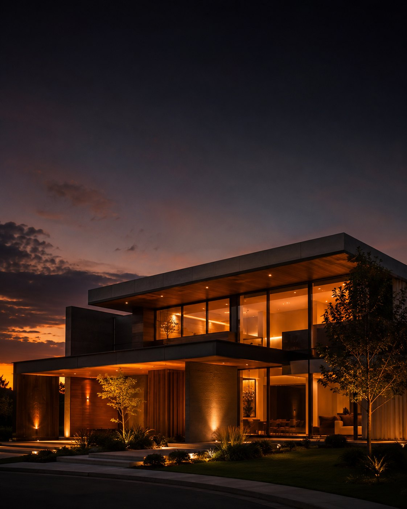

Algumas casas não se anunciam.
Esperam, em silêncio, ser encontradas.
Dedicamos tempo a poucas famílias. Ouvimos o que importa, percorremos a cidade inteira e esperamos o momento certo — sem pressa, sem ruído.
A gente não procura casas.
A gente ajuda famílias a encontrar o lugar onde a vida delas vai acontecer.
Concreto, madeira e a luz da tarde.
Queremos que vocês façam poucas visitas. Mas que cada uma seja a casa certa.
Queremos entender sua família, sua rotina, seus planos e aquilo que realmente importa para vocês.
Não saímos enviando todos os imóveis que aparecem. Selecionamos apenas os que realmente combinam com o que vocês procuram.
Sem mensagens todos os dias. Sem insistência. Sem encher o celular de links. Só quando vale a pena conhecer aquele imóvel.
Explicamos, orientamos, tiramos dúvidas e ajudamos na negociação — até que vocês encontrem o lugar certo.
Toda família tem uma história.
Toda história merece um lar.
O silêncio também é um endereço.
Acreditamos que uma casa nunca começa nas paredes.
Ela começa quando uma família imagina o café da manhã naquela cozinha. Quando uma criança escolhe qual será o seu quarto. Quando alguém abre a janela e percebe que encontrou o lugar certo.
Não escolhemos imóveis. Escolhemos possibilidades.
Acreditamos menos em quantidade.
E muito mais em propósito.
Há casas bonitas.
E há casas que parecem ter sido feitas para a sua família.
A água devolve o céu.
Uma casa abriga pessoas.
Um lar abriga histórias.
Meu nome é Mateus Gregório. Há 14 anos trabalho no mercado imobiliário — e nesse tempo acompanhei centenas de famílias.
Com o passar dos anos, percebi que meu trabalho nunca foi apenas vender casas. Foi ajudar pessoas a encontrar o lugar onde viveriam suas próximas histórias.
Sou cristão, marido e pai. Minha fé influencia a maneira como trato as pessoas. Acredito que Deus se importa com as famílias — e que cada casa pode se tornar um lugar onde o amor, a paz e as boas lembranças crescem.
Foi assim que nasceu o Rei das Casas. Não apenas como uma imobiliária diferente, mas como uma forma diferente de cuidar das pessoas.
A casa certa não muda apenas o endereço de uma família. Muitas vezes, muda a forma como essa família vive.
O resto é conosco. Quando a casa certa surgir, você saberá primeiro — no WhatsApp ou no e-mail.
O que já é seu pode abrir a próxima porta.
Avaliar uma permuta